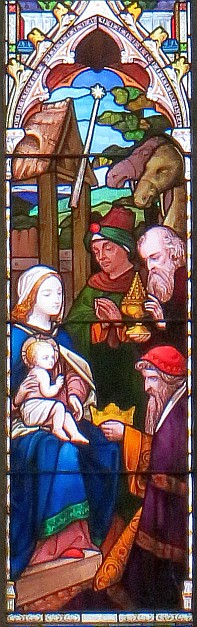

Jésû étant né à Bethléem, ville dé Judée, dans l'temps qué Hérode était l'rouai, des mages dé l'Êst vîndrent à Jérusalem,
et dîdrent: Où'est tch'est lé Rouai des Juis tchi veint d'naître? car j'avons veu s'n êtaile dans l'Êst, et j'sommes vénus l'adouother.
Lé rouai Hérode ayant ouï ch'la, il en fut troublié, et tout Jérusalem auve li.
Et ayant assemblié touos les prîncipaux prêtres et l's hommes dé louai, i' lus d'mandit où'est qu' lé Christ dévait naître.
Et i' lî dîdrent: Ch'est à Bethléem, ville dé Judée: car ch'est d'même qué l'a êcrit un prophète:
Et té, Bethléem, tèrre dé Judée, tu n'es pon la maindre entre les prîncipales villes dé Judée, car ch'est dé té qué geuthitha l'Gouvèrneux tchi souongn'na d'Israël, man peupl'ye.
Pis Hérode, ayant appelé en ségret les mages, lus d'mandit d'li dithe exactément quand est-che tch'il' avaient veu l'êtaile:
et l's env'yant à Bethléem, i' lus dit: Allez, et dêcouvrez tout ch' qu'ou pouvez entouor chu p'tit êfant, et quand ou l'éthez trouvé, faites-mé saver, à seule fîn qué j'y'âge étout, pouor l'adouother.
Ieux, don, ayant ouï l'rouai, i' s'en allîdrent ; et né v'chîn qu' l'êtaile tch'il' avaient veu dans l'Êst allait l'avant à ieux, jusqu'à ch' qu'ou vînsse s'arrêter drait en d'ssus du lieu où'est tch'était lé p'tchiot.
Et quand i' vidrent l'êtaile s'arrêter, il' eûdrent eune hardi grand' jouaie.
Et étant entrés dans la maîson, i' trouvîdrent lé p'tchiot, auve Mathie sa m'mèe, et i' l'adouothîdrent en s'prostèrnant: et auprès aver dêpatchi lus trésors, i' lî présentîdrent des dons, dé l'or, dé l'enchens et d'la myrrhe.
Chapitre 2 Versêts 1 à 11
Jésus, étant né à Bethléem, ville dé Judée, dans l'temps du rouai Hérode, des Mages dé l'Orient arrivîtent à Jérusalem,
et i'd'mandîtent, "Où'est qu'est lé Rouai des Juifs qui est né? car j'avons veu s'n êtaile en Orient, et j'sommes v'nus pour l'adorer."
Le rouai Hérode, l'ayant apprint, il en fût bein gêné, et tout Jérusalem auvec li.
Et ayant reûnit touos les prîncipaux sacrificateurs et les scribes du peuplye, i' lus d'mandit où'est qué lé Christ dev'thait naître.
Et i' li dîtent, ''Ch'est à Bethléem, ville de Judée, car ch'est comme chennechîn qu' êcrit un prophète :
Et té, Bethléem, tèrre dé Judah, tu n'est pas la moindre entre les prîncipales villes dé Judah; car ch'est dé té que veindra le Conducteur qui paîtra Israël, man peuplye."
Donc Hérode, ayant fît v'nîn en ségrét les mages, i' lus d'mandit exactement du temps tch'il' avaient veu l' êtaile.
Et les env'yant à Bethléem, i' lus dit, "Allez, et dêcouvrez tout entouor chu p'tit êfant; et quand ous l'aithez trouvé, faites-mé lé saver, pour que j'piesse y aller étout, et que j'l'adore."
Ayant ouï lé rouai, i' s'en r'mîntent en route; et n'evchîn l'êtaile qu'il' avaient veu en Orient allant l'avant à ieux, jusqu'à chein qu'étant arrivé à la pliaiche où'est qué lé p'tit êfant 'tait, ou s'y arrêtit.
Et quand i' viyaient l'êtaile s'arrêter, i' fûdrent remplyis d'eune forte grande jouaie.
Et ayant entrés dans la maîson, i' trouvîtent lé p'tit êfant, avec Marie, sa mèthe, et i'li fitent adorâtion en lus prostérnant; et auprès aver ouvri lus trésors, i'li présentîtent des dons; dé l'or, dé l'enchens et d'la myrrhe.
Chapitre 2 Versêts 1 à 11
 Jésû étant né à Bethléem, ville dé Judée, dans l'temps qué Hérode était rouai, des Mages dé l'Orient vîntent à Jérusalem et d'mandîtent, “où'est qu'est lé Rouai des Juis tchi veint d'naître, car j'avons veu s'n êtaile dans not' pays dé l'Orient et j'sommes v'nus ichîn pouor l'adorer?” Quand lé rouai Hérode ouït ches patholes il en fut tout gêné, et toute la ville dé Jérusalem étout.
Jésû étant né à Bethléem, ville dé Judée, dans l'temps qué Hérode était rouai, des Mages dé l'Orient vîntent à Jérusalem et d'mandîtent, “où'est qu'est lé Rouai des Juis tchi veint d'naître, car j'avons veu s'n êtaile dans not' pays dé l'Orient et j'sommes v'nus ichîn pouor l'adorer?” Quand lé rouai Hérode ouït ches patholes il en fut tout gêné, et toute la ville dé Jérusalem étout.I' rêunit touos les prîncipaux sacrificateurs et les scribes du peupl'ye en les tchestchionnant pouor dêcouvri où'est qu'lé Christ dévait naître.
Et i' lî dîtent, “Ch'est à Bethléem en Judée”, comme nos l'a êcrit lé prophète.
“Et té, Bethléem, tèrre dé Judée, n'est pas la moindre împortante dé toutes les prîncipales villes dé Judée, car ch'est dé té tchi nos veindra lé Bèrger tchi prendra soin dé man troupé, dé man peupl'ye Israël”
Auprès aver ouï ches patholes, Hérode fit v'nîn en ségret, les Mages. I' lus d'mandit dé lî dithe exactement à tchi date qué l'êtaile avait appathu. Auprès chutte entréveue, i' l's env'yit à Bethléem en lus dîsant: “Allez don et dêcouvriz tout chein qu'ou pouvez entouor chu p'tit êfant et quand ou l'éthez trouvé, v'nez don m'dithe pouor qué j'piêsse aller l'adorer étout”.
Et ayant êcouté chein qu'lé rouai avait à lus dithe i' sé r'mîntent en route et là, drait d'vant ieux, était l'êtaile qu'il' avaient veu en l'Orient et tch'allait l'avant à ieux jusqu'à qu'il' arrivîssent sus les lieux où'est qu'lé p'tit Êfant était. I' fûtent remplyis dé jouaie en viyant l'êtaile arrêter, et en entrant dans la maîson, i' vîtent l'Êfant et sa méthe Marie; et lus mettant à g'nouors, i' Lî fîtent hommage et adorâtion. I' dêpatchîtent lus trésors et i' Lî présentîtent lus dons – dé l'or, dé l'enchens et d'la myrrhe.
Viyiz étout: